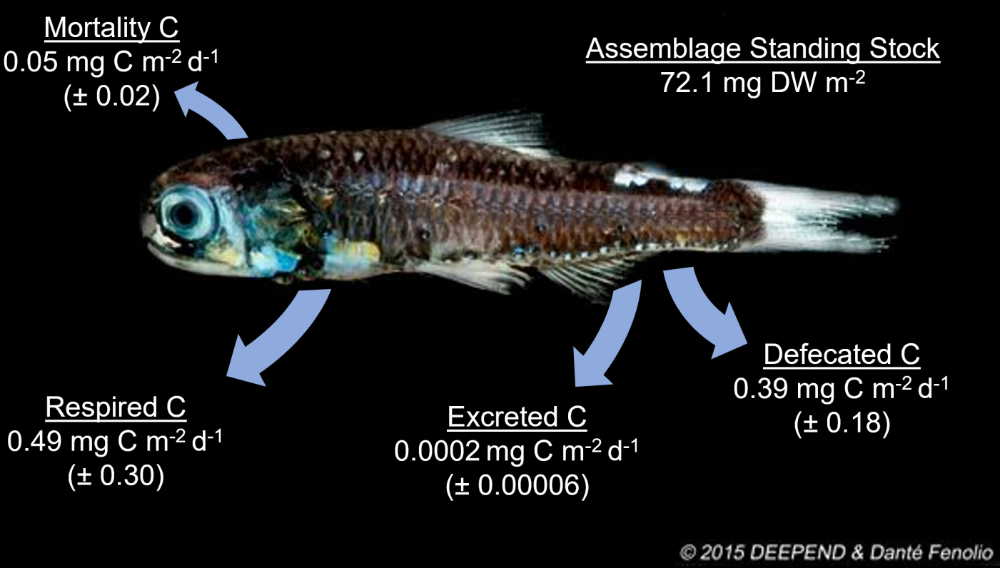

Carbon Export by Mesopelagic Fishes in the Gulf of Mexico
Synopsis of Work
The active transport of carbon from the epipelagic zone (0–200m) into the deep-pelagic zone (water column deeper than 200m) occupies a significant contribution to the biological carbon pump and serves to aid in carbon sequestration into the deep sea. Carbon export modeling is generally an extension of bioenergetic modeling, applying energetic rates with life history parameters to estimate carbon ingestion and release. Through this effort, I have developed a trait-based model that runs on an individual scale, allowing for comparisons among species and size classes. In the oceanic Gulf of Mexico, the mesopelagic micronekton fish community actively transports between 11 and 24% of the total dissolved organic carbon in the water column each year, an act primarily led by lanternfishes. Ongoing efforts aim to improve on the model structure (R-based), incorporate new processes, and refine carbon export estimates for the carbon export of mesopelagic fishes in the Gulf of Mexico.
Publications
- Woodstock, M.S., T.T. Sutton, Y. Zhang. (2022). A trait-based carbon export model for mesopelagic fishes in the Gulf of Mexico with consideration of asynchronous vertical migration, flux boundaries, and feeding guilds. Limnology and Oceanography. 67:1443–1455. Link to Paper
Presentation
- Woodstock, M.S., T.T. Sutton, Y. Zhang. (2022). A trait-based carbon export model for mesopelagic fishes in the Gulf of Mexico with consideration of asynchronous vertical migration, flux boundaries, and feeding guilds. ASLO Ocean Sciences Meeting. Online Presentation.
Collaborators
Deep-Pelagic Nekton Dynamics of the Gulf of Mexico
Florida International University Fisheries and Ecosystem Assessment Lab